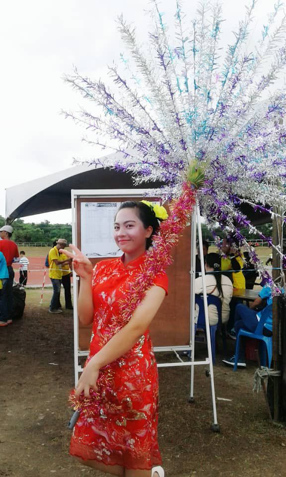

EDUCATION
"If you postpone a task until the last minute, it will take only one minute to complete" — a wise person
Academic
SK Melangkap
I studied in SK Melangkap for 7 years, from pre-school, Year 1 until Year 6. It was a very small school in rural countryside with a lot of gigantic rocks around, students' favorite seat during breaks between classes. The security would chase us away, saying its dangerous but we never learn. I got 4A 1B in my UPSR in 2014. The 'B' is Mathematics😒. I have always been a Top1/2 student in the class during my middle school days (hohoho). I have about two dozens of gold(color only lol) trophies at home.SMK Narinang
I studied in SMK Narinang for 5 years, staying in the hostel because my village is pretty far from the school(around 45 minutes by car). I was also a Top1/2 student in high school, but high school does not give trophies tsk tsk tsk at least they gave me money. For SPM, I got 7A 2B..... with the 'Bs' being Mathematics (again haishhh) and.... Pendidikan Moral😥,, my friends said that I lack morality (are they joking or not I can't tell).
Universiti Teknologi MARA(UiTM)
 I am currently in my fourth and final semester in UiTM, pursuing Diploma in Library Management📚. The reason why I chose this program is that I thought I will not need to study Mathematics, but alas, I have to do coding instead eughh but coding is fun until I lost my laptop, and it's not fun anymore. This webpage you are reading right now is my individual assignment for IMD311. My GPA from 1st semester until 3rd semester is 3.81, 3.75, and 3.83, respectively. My friends said I could have gotten 4.00 if I did not procrastinate and studied properly. I am not planning on continuing to Degree though. I'm tired af with school.
I am currently in my fourth and final semester in UiTM, pursuing Diploma in Library Management📚. The reason why I chose this program is that I thought I will not need to study Mathematics, but alas, I have to do coding instead eughh but coding is fun until I lost my laptop, and it's not fun anymore. This webpage you are reading right now is my individual assignment for IMD311. My GPA from 1st semester until 3rd semester is 3.81, 3.75, and 3.83, respectively. My friends said I could have gotten 4.00 if I did not procrastinate and studied properly. I am not planning on continuing to Degree though. I'm tired af with school. Co-curricular
SK Melangkap
I was a 'pengawas sekolah' during middle school. Pink is the color of the uniform, with red necktie. My sports 'house' is called Green, probably (honestly I don't remember).SMK Narinang
I was pretty active in high school. This picture on the left is when I participated in a marching competition between schools during state sports event. The make-up is unforgivable💀. My school got first place in the marching competition, and also the overall sports competition (20+ years of consecutive victories)😏.
The picture right here is another marching competition. ALSO FIRST PLACE HOHOHOHOHO
This picture was taken in 2018. I was also a 'Pembimbing Rakan Sebaya' (student peer position?) in 5 years of high school. Uniform color is purple with black necktie. I was a member of Red Cresent group as well.
Universiti Teknologi MARA(UiTM)
I never planned to be active in co-curriculum so I did not apply for clubs and stuff. I do attend people's events or participate in programs as the audience. The picture on the right is when my HPD234 conducted a SULAM event, a movie night in Dewan Sarjana 2.One of the event I joined is the Color Zumba. It was very fun. However, I would have enjoyed it more if the zumba did not use kpop songs with COMPLICATED zumba moves because how am I suppose to dance to that I have no talent.